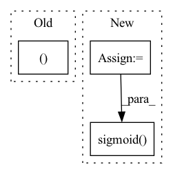

Pattern ID :1430

Before Change
self.update_location_attention(alignment)
// apply forward attention if enabled
if self.forward_attn:
context, self.attention_weights = self.apply_forward_attention(
inputs, alignment, query)
else:
context = torch.bmm(alignment.unsqueeze(1), inputs)
After Change
// compute transition agent
if self.forward_attn and self.trans_agent:
ta_input = torch.cat([context, query.squeeze(1)], dim=-1)
self.u = torch.sigmoid(self.ta(ta_input))
return context
In pattern: SUPERPATTERN
Frequency: 4
Non-data size: 3
Instances
Fragment ID: 4891931
Project Name: coqui-ai/tts
Commit Name: 40f56f9b000bb03384ebe883c03380b260a6a205
Time: 2019-07-24
Author: thomas@twerkmeister.com
File Name: layers/common_layers.py
M Class Name: Attention
N Class Name: Attention
M Method Name: forward(5)
N Method Name: forward(5)
M Parent Class: nn.Module
N Parent Class: nn.Module
M File Name: layers/common_layers.py
N File Name: layers/common_layers.py
M Start Line: 262
M End Line: 267
N Start Line: 255
N End Line: 266
'>
Before Change
self.layer_4 = nn.Linear(config["lin3_size"], 10)
def forward(self, x):
batch_size, channels, width, height = x.size()
// (b, 1, 28, 28) -> (b, 1*28*28)
x = x.view(batch_size, -1)
After Change
x = self.drop1(x)
x = self.lin_1(x)
x = F.relu(x)
x = self.drop2(x)
x = self.lin_2(x)
return torch.sigmoid(x)
'>
Fragment ID: 4891929
Project Name: hobogalaxy/lightning-hydra-template
Commit Name: e694cd0164e92dee9a451b8df20260fdf9bec4e2
Time: 2020-11-15
Author: zalewski.ukas@gmail.com
File Name: project/pipeline_modules/models.py
M Class Name: ModelMNISTv2
N Class Name: EfficientNetPretrained
M Method Name: forward(2)
N Method Name: forward(2)
M Parent Class: nn.Module
N Parent Class: nn.Module
M File Name: project/pipeline_modules/models.py
N File Name: project/pipeline_modules/models.py
M Start Line: 41
M End Line: 53
N Start Line: 54
N End Line: 61
'>
Before Change
attn_scores = torch.stack(attn_scores).transpose(0, 1)
mel_outputs = torch.stack(mel_outputs).transpose(0, 1).contiguous()
return mel_outputs, attn_scores
def is_end_of_frames(output, eps=-3.4):
return (output.data <= eps).all()
After Change
output = self.mel_proj(decoder_output)
// Stop token prediction
stop = self.stop_proj(decoder_output)
stop = torch.sigmoid(stop)
// Store predictions
mel_outputs += [output]
attn_scores += [attention_score]
'>
Fragment ID: 4891933
Project Name: thuhcsi/tacotron
Commit Name: 34e667ab8dfa8ce50329b538965b161efb3f9aaa
Time: 2021-03-14
Author: johnson.tsing@gmail.com
File Name: model/tacotron.py
M Class Name: Decoder
N Class Name: Decoder
M Method Name: forward(4)
N Method Name: forward(4)
M Parent Class: nn.Module
N Parent Class: nn.Module
M File Name: model/tacotron.py
N File Name: model/tacotron.py
M Start Line: 143
M End Line: 167
N Start Line: 116
N End Line: 176